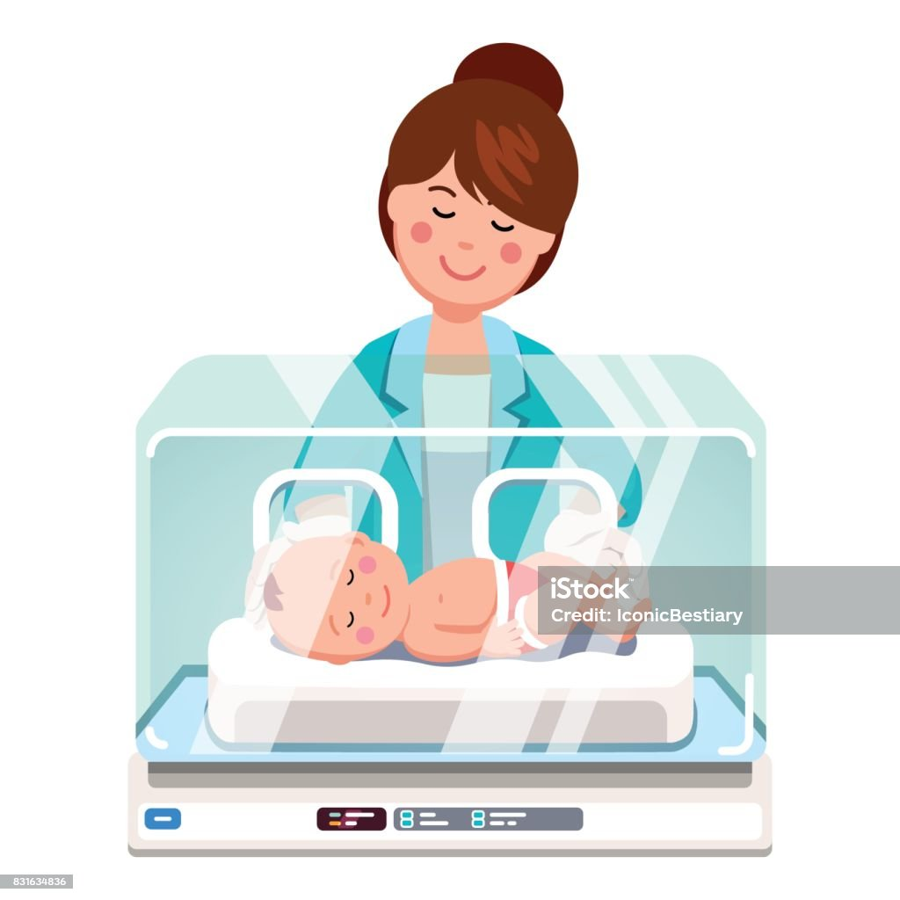
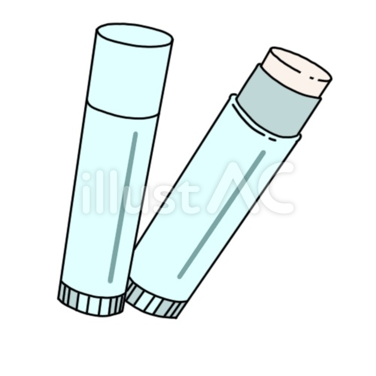

My Vocabulary Page
tickle v(i,t) //

move your fingers on a sensitive part of somebody’s body
in a way that makes them laugh
1.1/ Stop tickling!
1.2/ Stop! You're tickling me!
1.3/ The bigger girls used to chase me and tickle me.
1.4/ I tickled her feet and she laughed.
1.5/ I tickled his feet with a feather.
1.6/ "If someone tickles your shoulder, you might not feel a thing,
but have them tickle your armpits or the soles of your feet
and you’re sure to squirm.
v(i,t) if a part of the body tickles, or if something tickles it,
it feels slightly uncomfortable and you want to rub it
2.1/ My throat tickles.
2.2/ His beard was tickling her cheek.
2.3/ My nose is tickling, I think I'm going to sneeze.
see also: itch, itchy
v(t) please and interest somebody
tickle your imagination, tickle your fancy
3.1/ See if any of these tickle your fancy.
3.2 If you see something that tickles your fancy, I’ll buy it for you.
3.3/ "This book is an inspirational success guide to tickle your imagination
and trigger action."
3.4/ "They want to tickle kids' imagination and inspire the creativity that
naturally flows in fertile, young minds."
tickle somebody to do something
3.5/ I was tickled to discover that we'd both done the same thing.
be tickled pink: be very happy
3.6/ I was tickled pink to hear the news.
3.7/ She was tickled pink to be given flowers.
tickle n(singular) //
give somebody a tickle: an act of tickling somebody
4.1/ She gave the child a little tickle.
4.2/ "Come and give me a tickle!"
4.3/ The dog was lying on his back, waiting for me to give him a tickle.
n(singular) a slightly uncomfortable feeling in a part of your body
5.1/ I have a tickle in my throat. (=that makes me want to cough)
5.2/ "Why does coffee give me a tickle in my throat?"
nuisance n(c) //
(usually singular) a thing, person or situation that is annoying
or causes trouble or problems
what's a nuisance
1.1/ What a nuisance!
1.2/ I've forgotten my umbrella - what a nuisance!
It is a nuisance doing something
1.3/ It's such a nuisance having to rewrite those letters.
1.4/ It's a nuisance having to go back tomorrow.
1.5/ It’s a nuisance filling out all these forms.
1.6/ It's an awful nuisance having builders in the house all day.
It is a nuisance that ...
1.7/ "It is a nuisance that knowledge can only be acquired by hard work."
1.8/ "Apparently it was a nuisance that Russian MP had to publish their income."
be a nuisance
1.9/ I don't want to be a nuisance so tell me if you want to be alone.
1.10/ I hate to be a nuisance, but could you help me?
be a nuisance to somebody/something
1.11/ "I am a nuisance to the society."
1.12/ "They are not dog lovers but a nuisance to the society."
1.13/ "Education is a tool for national development but how has it
become a nuisance to the society?"
1.14/ "The Joys Of Defiance: Is their pride in being a nuisance to the society?"
n(c) make a nuisance of yourself: cause trouble or to annoy other people
2.1/ I hope you're not making a nuisance of yourself.
2.2/ The officer reported that he was obviously very drunk and
making a nuisance of himself.
2.3/ "A number of tourists made a nuisance of themselves trying to drive up
in two wheel drive cars and then getting stuck in the middle of the road."
n(c,u) a public nuisance: behaviour by somebody that annoys other people
and that a court can order the person to stop
3.1/ He was charged with causing a public nuisance.
3.2/ The EPA says the landfill is a public nuisance because of the odors.
3.3/ Local residents claimed that the noise was causing a public nuisance.
3.4/ Residents claim that the company's emissions are harmful
and constitute a nuisance.
acquaintance n(c) //
a person that you know but who is not a close friend
1.1/ "She is my business acquaintance."
1.2/ He's just a business acquaintance.
1.3/ Claire has a wide circle of friends and acquaintances.
1.4/ I bumped into an old acquaintance on the train.
see also: a (business) contact
n(c,u) acquaintance (with somebody): slight friendship
2.1/ He hoped their acquaintance would develop further.
2.2/ He is a man with whom I had a passing acquaintance.
2.3/ I first met Simon in 2008 and struck up an acquaintance with him.
have no acquaintance with somebody
2.4/ I have absolutely no acquaintance with the family.
see also: keep in contact with somebody
n(c,u) acquaintance (with something): knowledge of something
3.1/ I had little acquaintance with modern poetry.
3.2/ Sadly, my acquaintance with Spanish literature is rather limited.
3.3/ They have little acquaintance with colloquial /kə'ləʊ.kwi.əl/ English.
(idiom) make somebody's acquaintance (/make the acquaintance of somebody):
meet somebody for the first time
4.1/ I am delighted to make your acquaintance, Mrs Baker.
4.2/ I’m very pleased to make your acquaintance.
4.3/ I first made his acquaintance in 1992.
4.4/ It was at the Taylors' party that I first made his acquaintance.
4.5/ I made the acquaintance of several musicians around that time.
4.6/ "I'm happy to make the acquaintance of you."
(idiom) on first acquaintance: when you first meet somebody
5.1/ Even on first acquaintance it was clear that he was not 'the right type'.
5.2/ On first acquaintance she seemed a little odd.
on further acquaintance
5.3/ I wasn't sure about Darryl when I first met her, but on further acquaintance
I rather like her.
n(u) (idiom) of your acquaintance: that you know
6.1/ No one else of my acquaintance was as rich or successful.
6.2/ He introduced me to a lady of his acquaintance.
6.3/ You have yet to have the pleasure of her acquaintance.
6.4/ A small girl of my acquaintance insists on eating cornflakes without milk,
flake by flake.
harness n(c) //

a piece of equipment with straps and belts, used to control
or hold in place a person, animal, or object
1.1/ The sight of horses in harness hauling timber was common
a hundred years ago.
a safety harness
1.2/ "Why wear a safety harness? It is important to wear safety harnesses
when working at altitude and in height."
1.3/ "To put on a safety harness, first make sure that all of the straps and buckles
are fastened correctly. Then, put the harness on over your head and adjust
the straps so that it fits snugly around your body. Once you have the harness on,
double check all of the straps and buckles to make sure they are secure."
1.4/ She fastened the safety harness tightly around her waist
before starting the descent.
a parachute harness
1.5/ "Fighter pilots typically wear a parachute harness that is connected
to their ejection seat."
1.6/ "Jumpers wear a parachute harness when they jump off the tower."
1.7/ "We put on parachute harnesses, then climb through the hatch
into the shuttle."
a baby harness (see also: a baby carrier)
1.8/ They suggested that I put a baby harness on my four-year-old.
1.9/ "If you are hiking with a child who is younger than one year of age,
it is advisable to carry a baby harness on your stomach."
(idiom) be back in harness:
have returned to work after being away for a period of time
2.1/ "After a quiet few months, I am back in harness and working
on a new book project."
2.2/ "Here I am back in harness at long last."
2.3/ "Once again, I am back in harness, busy at the office."
2.4/ The longing for work will return and you will be right back in harness.
(idiom) in harness with somebody:
working closely with somebody in order to achieve something
3.1/ They’ll be working in harness with other doctors to compile the report.
3.2/ Thomas was condemned to work in harness with his older brother.
3.3/ "Republicans command a majority in the House, and Speaker John Boehner
and the GOP leadership worked in harness with Obama to pass the legislation.
harness v(t) //
control something, usually in order to use its power
4.1/ There is a great deal of interest in harnessing wind and waves as
new sources of power.
4.2/ There are attempts to harness the sun’s rays as a source of energy
4.3/ We must harness the skill and creativity of our workforce.
4.4/ How can this energy be harnessed effectively for the good of humankind?
4.5/ They are attempting to harness the power of the sun.
4.6/ "A sailing ship is a sea-going vessel that uses sails mounted on masts
to harness the power of wind and propel the vessel."
see also: make use of something
v(t) put a harness on a horse or other animal;
attach a horse or other animal to something with a harness
5.1/ "We try to harness a horse to a carriage."
5.2/ "In the city, the ability to harness a horse will come in handy for a few."
harness somebody/something to something
5.3/ We harnessed two ponies to the cart.
5.4/ In some areas, the poor feel harnessed to their jobs.
5.5/ "I spend most of my day harnessed to my computer talking to you
and many other people."
scaffolding n(u) // or //

a structure of metal poles and wooden boards put against a building for
workers to stand on when they want to reach the higher parts of the building
1.1/ The scaffolding rises 10 stories above the street.
1.2/ The statue is currently surrounded by scaffolding.
1.3/ Scaffolding has been erected around the tower and repair work
will start next week.
1.4/ "It can be difficult to erect scaffolding that's safe and steady on
some older buildings with weakened exterior structures."
n(u) bamboo scaffolding
1.5/ "Bamboo scaffolding is found everywhere in Hong Kong."
1.6/ "Bamboo scaffolding is a temporary structure commonly used in the
construction industry which is made out of bamboo."
1.7/ "Everything you need to know about bamboo scaffolding, a construction
material that is flexible, strong and cheaper than steel and aluminium."
n(c) scaffolding poles, scaffolding tubes
1.8/ "It is necessary to erect scaffolding poles accurately."
1.9/ "We supply a large range of scaffolding tubes include 3.2mm wall tube,
4mm tube, used tube and aluminium tube."
1.10/ "Our brand-new type 4, heavy-duty galvanised steel scaffolding tubes
are used to create the framework on scaffold structures and also washing lines,
handrails, bike & canoe racks, staircases, table legs, climbing frames,
railings and more."
n(c) a safety net, a scaffold safety net
1.11/ Façade maintenance work carried out by two workers on a scaffold
covered by a safety net.
n(c) a scaffolder /'sgæ.fəʊl.dər/
1.12/ "Scaffolders erect and dismantle temporary metal scaffolding on
structures and building sites, so that other people can work at height and
carry out their jobs safely."
1.13/ "Scaffolders erect, dismantle and repair bamboo or metal scaffolding
required in construction work."
1.14/ "Scaffolders are individuals who are physically strong and are comfortable
working outdoors and high above the ground.
n(c) scaffold /'sgæ.fəʊld/:
a structure made of scaffolding,
for workers to stand on when they are working on a building
erect a scaffold
2.1/ "To successfully erect a scaffold, the scaffold pipes are placed in
different ways to perform different functions."
2.2/ "This guide is an exact blueprint on how to build a scaffold from scratch."
on a scaffold
2.3/ "All employees who work on a scaffold must be trained by a person
qualified to recognize the hazards associated with the type of scaffold used
and to understand the procedures to control and minimize those hazards."
2.4/ "Do not work on a scaffold if you feel weak, sick or dizzy or
are taking medication that causes drowsiness or impairs reflexes."
n(c) a scaffold tower
2.5/ "There are two safe ways to build a scaffold tower where you won't ever
have to stand on an unprotected platform."
2.6/ "It can be dangerous to try and build a scaffold tower higher than
what is stipulated by the manufacturer."
2.7/ "Follow our DIY guide on how to build a mobile scaffold tower,
so you can reach heights safely for jobs at home or at work."
wind up v //
wind/wound/wound: /waɪnd/ /waʊnd/ /waʊnd/
(of a person) find yourself in a particular place or situation
1.1/ I always said he would wind up in prison.
1.2/ If he keeps doing stuff like that he's going to wind up in prison!
1.3/ You don't want to wind up homeless, do you?
1.4/ If you take risks like that you'll wind up dead.
1.5/ "Thousands of German and Austrian Jews wound up in Shanghai,
one of the few places in the world you where you didn't need a visa to settle."
wind up doing something
1.6/ We eventually wound up staying in a little hotel a few miles from town.
1.7/ If you aren’t careful lifting weights, you could wind up hurting yourself.
see also: end up, end up doing something
wind up (something): end, or make an activity end
2.1/ I think it's about time we wound this meeting up.
2.2/ We need to wind up now, we only have five minutes left.
2.3/ We should be able to wind things up by 10 o’clock.
2.4/ If we all agree, let's wind up the discussion.
2.5/ The speaker was just winding up when the door was flung open.
2.6/ We need to start winding up now as someone else has booked
the meeting room.
see also: sum up, wrap up, wrap it up
wind up something: close a business or organization
3.1/ Lawyers were called in to wind up the company.
3.2/ The company was wound up in February with debts of $5.2 million.
see also: n(c,u) winding up, a winding-up order
see also: winding, a wind-up toy
end up v //
finally be in a particular place or situation
end up doing something
1/ I ended up doing all the work myself.
2/ Most slimmers end up putting weight back on.
3/ After working her way around the world, she ended up teaching
English as a foreign language.
4/ He came round for a coffee and we ended up having a meal together.
end up in somewhere
5/ If you go on like this you will end up in prison.
6/ Forbes ended up in prison for not paying his taxes.
7/ I fell asleep on the bus and ended up in Denver.
8/ We moved around a lot when I was young but we ended up in London.
9/ They're travelling across Europe by train and are planning to end up in Moscow.
end up with something
10/ Anyone who swims in the river could end up with a nasty stomach upset.
11/ "If you go on like this you will end up with nothing."
end up as something
12/ Much of this meat will probably end up as dog food.
13/ He could end up as president.
end up like somebody/something
14/ I don’t want to end up like my parents.
end up + adj
15/ She'll end up penniless if she continues to spend like that.
16/ If he carries on driving like that, he'll end up dead.
hands-on adj //
(before noun) doing something rather than just talking about it
hands-on experience
1/ You can gain hands-on experience of industry in our company.
2/ "This internship programme enables young people in Hong Kong to gain
hands-on experience of working with serving AOs and learn about the operation
of the Government and the mission and role of an AO, thus facilitating their
future career planning." (remark: 'AOs' means 'administrative officers')
hands-on training
3/ "The students shall acquire hands-on training in maintenance,
servicing, and troubleshooting."
4/ "People who spent their money and time on traditional education
were not as productive as those who went on to receive hands-on training
in internship positions".
hands-on education
5/ "Two- and four-year programs offer hands-on education in electronics
and computers to complement the engineer's skills in activities ranging
from research to manufacturing."
see also: be savvy in/about something
resort n(c) //
a place where a lot of people go on holiday
1.1/ We went to a holiday resort abroad.
1.2/ The coastal resorts are deserted in winter.
1.3/ They spent a month at a fashionable ski resort in Switzerland.
1.4/ "We stay at a seaside resort in a local family guesthouse near the beach."
1.5/ "Visit a mountain resort in the Tatra Mountains on this day tour from Krakow."
1.6/ "The village's character changed slowly into a tourist resort as the demand
for beach recreation rose from about the middle of the 19th century."
n(u) resort to something: the act of using something,
esp something bad or unpleasant, because nothing else is possible
2.1/ He got hold of the money legally, without resort to violence.
2.2/ There are hopes that the conflict can be resolved without resort to violence.
2.3/ "It is much better public practice to lay down fair firm rules
after careful consultation with all concerned and then, when someone
violates the rules, have resort to law."
(idiom) last resort: a final course of action, used only when all else has failed
3.1/ You have to help me - you're my last resort.
3.2/ Experts say warning labels are a last resort when a hazard can't
be designed out of a product.
as a last resort
3.3/ As a last resort, we could ask your mother to help.
3.4/ Strike action should be regarded as a last resort, when all attempts
to negotiate have failed.
3.5/ As a last resort, savers could always open an ISA with their current bank
or building society." (ISA means 'individual savings account')
in the last resort: in the end
3.6/ In the last resort everyone must decide for themselves.
resort to something v //
make use of something, esp something bad, as a means of
achieving something, often because there is no other possible solution
4.1/ They felt obliged to resort to violence.
4.2/ We had to resort to another loan from the bank.
4.3/ They achieved their demands without having to resort to force.
4.4/ "In 1938, the Japanese blockaded China's coastal ports. China had to
import its strategic commodities via Vietnam. In 1940, the Japanese
took over Vietnam, then China resorted to the Burma Road for its imports."
4.5/ "The religions outside Christendom have also resorted to war
down through the centuries."
resort to doing something
4.6/ We may have to resort to using untrained staff.
4.7/ "She warned that, if women were not allowed legal terminations,
they would resort to buying abortion pills over the internet
and embarking on other risky courses of action."
on point idiom //
appropriate or relevant to the situation
1.1/ Let's stay on point.
1.2/ The quotation was directly on point.
1.3/ None of the above comments are on point.
1.4/ None of the replies was on point.
see also: digress, off topic, talk in circles, address an issue
(idiom) perfect; exactly right for the occasion
2.1/ My hair was on point.
2.2/ The music here is totally on point.
2.3/ "Her dance performance was on point."
(idiom) have a point (there): have made a good suggestion; have a good idea
3.1/ A: "It's snowing—should we really go out for ice cream?"
B: "Hmm, you have a point there."
3.2/ He’s got a point there; if you sell the house now you’ll lose money,
so why not wait till next year?
3.3/ Animal rights campaigners have a point when they say that a lot of
animal testing is unnecessary.
phone it in idiom //
phone it in: perform a role or duty in a halfhearted,
disinterested, and unprofessional manner
1/ One of the actors in the play was just phoning it in.
2/ Everyone phones it in on the morning after a staff party,
so don't worry if you don't feel able to give this report your all.
3/ You can tell the actor is phoning it in - I'm sure he got a good paycheck
for the voice-over, but you'd think he could try a little bit harder.
phone in something, phone something in
4/ After playing the same role for a year, the actor started to
phone in his performances.
5/ "If after that people told me i didn't have time for games,
I'd phone in my homework and then sit down to finally get to play my game."
6/ "It is straight to work, then home to bed and no time
for anything else. I can't phone my work in. And I must have my sleep."
see also: half-hearted, half-heartedly
roundabout n(c) //
(US: traffic circle, rotary) a place where two or more roads meet,
forming a circle that all traffic must go around in the same direction
1.1/ Take the first left at the roundabout.
1.2/ At the roundabout, take the second exit.
1.3/ Take the last turning at the roundabout.
1.4/ When entering a roundabout, give way to any traffic already on it.
1.5/ Leave the roundabout at the second exit.
1.6/ There was a lot of traffic on the roundabout.
(adj) not in a simple, direct, or quick way
2.1/ We took a roundabout route to avoid the accident.
2.2/ It was a difficult and roundabout trip.
in a roundabout way
2.3/ He asked me, in a roundabout way, if he could have a salary increase.
2.4/ "Sometimes, saying something in a roundabout way can be more interesting."
2.5/ He told us, in a very roundabout way, that he was thinking of leaving.
2.6/ This is a roundabout way of saying that nothing has been accomplished.
straight away adv //
(also: straightaway, straight off) immediately; without delay
1/ I knew straight away what you were thinking.
2/ We knew straight away that we'd be friends.
3/ We don't need to go straight off - we can stay for a little while.
4/ If you give me the job, I can start straight away.
5/ If anything happens, call me straight away.
6/ "I called him late at night and he came straight away."
see also: instantly, at once, promptly, right after something, afterwards
wear and tear n(u) //
the damage that happens to an object in ordinary use during a period
1/ Most tires will last for four years with normal wear and tear.
2/ "The living-room carpet has to stand up to the combined wear and tear
of two dogs and three children.
take wear and tear
3/ Seat covers on buses take a lot of wear and tear.
4/ "My laptop has taken much wear and tear."
caused by wear and tear
5/ The airline will not accept liability for minor damage to the outside
of luggage caused by normal wear and tear.
6/ The insurance policy does not cover damage caused by normal wear and tear.
worsen/exacerbate wear and tear
7/ "Abnormal loading can worsen wear and tear and add to joint pain,
while reducing joint loading can help ease pain."
8/ "Standing and walking with a twist through the body leads to joint and muscle
imbalances and to exacerbated wear and tear in specific points in the joints"
slow down/reduce wear and tear
9/ "Regular maintenance and cleaning helps to reduce wear and tear."
10/ "Oil protects the motor from corrosion, slows down wear and tear on
moving parts and reduces frictional resistance."
wear and tear on something
11/ The fuel additive reduces wear and tear on car engines.
12/ "Wear and tear on tires has been shown to produce more particle pollution
by mass."
see also: damage, depreciation, (adj) worn out, scuff
incubator n(c) //
a piece of equipment in a hospital that new babies are placed in
when they are weak or born too early, in order to help them survive
1.1/ "A premature baby is sleeping in an incubator."
1.2/ Their baby was so small that she spent three weeks in an incubator
before going home.
1.3/ "The premature baby stays in an incubator until the end of 37 weeks."
(animal) hatch eggs in an incubator
1.4/ "We hatch chicken eggs in an incubator."
1.5/ "Chicken eggs should hatch 21 days after they first start in an incubator."
see also: a cradle, a stroller, a pram, a baby cot
n(c) an organization that helps people to start new companies,
esp ones involved with advanced technology
2.1/ The university has a business incubator to foster technology start-ups.
2.2/ "When you decide to join a business incubator, you are joining a community
of entrepreneurs who are working on starting their own businesses."
2.3/ "An entrepreneur stays in an incubator program for as long as
it takes to get the business up and running."
an incubator of something
2.4/ "A model presents a creation of designer Zhang Yichao at an inauguration
ceremony of an incubator of fashion and innovative talents in Hangzhou."
see also: the cradle of something
give in v //
give in (to somebody/something):
admit that you have been defeated by somebody/something
1.1/ The rebels were forced to give in.
1.2/ You'll never guess the answer - do you give in?
1.3/ She wouldn't give in until she received a full apology.
1.4/ "After much resistance the robbers gave in to the police."
give in (to somebody/something):
agree to do something that you do not want to do
2.1/ He nagged me so much for a new bike that eventually I gave in.
2.2/ Our kids kept begging us to take them to the beach, and finally we gave in.
2.3/ "When we give in to our kids to please them, we are telling them
that the behaviour is acceptable."
2.4/ Eventually I gave in and accepted the job on their terms.
2.5/ The government cannot be seen as giving in to terrorists' demands.
2.6/ The authorities have shown no signs of giving in to the kidnappers' demands.
see also: be resigned to something/doing something
give something in (to somebody):
hand over something to somebody in authority
3.1/ Please give your work in before Monday.
3.2/ You were supposed to give this work in four days ago.
3.3/ Rose decided to give in her notice.
(=officially say she was going to leave her job)
3.4/ All assignments must be given in to your teacher by Friday.
see also: hand something in (to somebody)
eligible adj //
having the necessary qualities or satisfying the necessary conditions
be eligible for something
1/ Are you eligible for early retiremen?
2/ Are you eligible for maternity leave?
3/ You might be eligible for a grant.
4/ Only those over 70 are eligible for the special payment.
5/ She hopes to be eligible for parole in 3 years.
6/ The new regulations made a lot of prisoners eligible for early release.
7/ ou are not considered eligible for legal aid.
be eligible to do something
8/ When are you eligible to vote in your country?
9/ Only people over 18 are eligible to vote.
10/ Is she eligible to enter the competition?
11/ "When a citizen turns 18 in USA, they become eligible to vote."
12/ "When a person turns 21, they are eligible to drink alcohol."
see also: be allowed to do something
applicable adj //
affecting or relating to a person or thing
1/ "A discount for cash payment is not applicable."
2/ "No cash payments are applicable."
3/ "Payment by credit card is applicable."
4/ "The following premium payment methods are not applicable to monthly
premium payment frequency."
be applicable to somebody/something
5/ The law is applicable to everyone.
6/ The constitution is equally applicable to all citizens.
7/ Much of the form was not applicable to me.
8/ The new qualifications are applicable to all European countries.
9/ "This part of the law is only applicable to companies employing
more than five people."
where(/as/if) applicable: if you have any
10/ Give details of children where applicable.
11/ The company will help with moving expenses where applicable.
12/ "Ms/Miss/Mrs/Mr Please delete as applicable."
not applicable (N/A)
13/ In the section headed 'Previous employment', I wrote 'Not applicable'.
\see also: apply to somebody/something
on air, off air idiom //
on/off (the) air: broadcasting(/not broadcasting) on television or radio
1.1/ The radio station is on air from 6 am.
1.2/ We will be back on air tomorrow morning at 7.
1.3/ The programme was taken off the air over the summer.
1.4/ "There is a subtle excitement in hearing your favorite jingle
and knowing that your favorite TV show is on air."
(adj) on-air: being broadcast
1.5/ She explains how she deals with on-air technical problems.
1.6/ "This Morning producers will reportedly monitor the ITV show's
on-air phone-ins to prevent hosts like Holly Willoughby from being subjected
to outbursts about Phillip Schofield."
(adj) off-air
1.7/ "In the 1970s Martin Maynard hosted Archers cast members at his studio
to record off-air scenes as a gift for actor Jack Holloway."
see also: on (general) release, on show
air v(i,t) //
broadcast something or be broadcast on radio or television
2.1/ The program aired last week.
2.2/ The interview with the president will air tomorrow morning.
2.3/ The show will be aired next Tuesday night.
air live, be aired live
2.4/ The game will be aired live on CBS at 7.00 tonight.
2.5/ "Rock & Roll Hall of Fame ceremony will air live for first time on Disney+."
in the air idiom //
felt by a number of people to exist or to be happening
1/ There's romance in the air.
2/ "Love is in the air."
3/ "Summer has arrived, and ambition is in the air as the month opens with
a diligent full moon in Capricorn on July 3."
jingle n(c) //
a short song or tune that is easy to remember and is used in advertising
1.1/ I wrote a song which they’re thinking of using as a jingle.
1.2/ "According to a survey of nearly 1,000 Americans,
Nationwide is on Your Side is the catchiest jingle of all."
sing/hum a jingle
1.3/ "Everyone above a certain age will hum a jingle when they see this mug!"
1.4/ "Which of these performers sang a jingle promoting ZIP codes?"
a jingle writer
1.5/ She is one of America's most successful commercial jingle writers.
n(singular) a sound like small bells ringing that is made
when metal objects are shaken together
2.1/ He heard a jingle of keys at the door.
2.2/ "You heard a jingle of coins in his pocket."
jingle v(i,t) //
make a repeated gentle ringing sound, or make things do this
3.1/ The chimes jingled in the breeze.
3.2 A bell jingled as he entered the shop.
3.3/ She jingled the coins in her pocket.
3.4/ She waited for him by the car, jingling the keys in her hand.
3.5/ The coins jingled in her pocket as she walked along.
3.6/ "Jingle bells, jingle bells, jingle all the way!
inspire v(t) //
give somebody the desire, confidence or enthusiasm to do something well
inspire somebody
1.1/ His confident leadership inspired his followers
1.2/ The actors' enthusiasm inspired the kids.
1.3/ The director inspired everybody on the project.
1.4/ As a teacher, she has inspired generations of students.
inspire somebody with something
1.5/ The actors inspired the kids with their enthusiasm.
1.6/ "He inspired me with how important the teachers are to their students."
inspire somebody to something
1.7/ His superb play inspired the team to a thrilling 5–0 win.
1.8/ "Here come Watson's stunning quotes that inspire you to success in life."
inspire somebody to do something
1.9/ After her trip to Venezuela, she felt inspired to learn Spanish.
1.10/ She was inspired to write the song following the birth of her daughter.
1.11/ She inspired her students to do the best they could.
see also: encourage, motivate
v(t) inspire something: give somebody the idea for something,
esp something artistic or that shows imagination
2.1/ The choice of decor was inspired by a trip to India.
2.2/ His tragic story later inspired a Hollywood film.
2.3/ A successful TV program inspires many imitations.
2.4/ "You can see the field that Vincent painted and the cafe that
inspired Café Terrace at Night."
v(t) make somebody have a particular feeling or emotion
3.1/ Henry did not inspire confidence as a figure of authority.
3.2/ He inspired respect and devotion from his pupils.
inspire somebody with something
3.3/ Her work didn't exactly inspire me with confidence.
3.4/ "Each of you has risen to the challenge of this moment, and you inspire me
with hope for our human future."
inspire something in somebody
3.5/ As a general, he inspired great loyalty in his troops.
3.6/ She has a faculty for inspiring confidence in people.
inspiration n(c,u) //
somebody or something that gives you ideas for doing something
1.1/ Her inspiration comes from Asia.
1.2/ Her work lacks inspiration.
1.3/ Many of us found inspiration in her teaching.
1.4/ Dreams can be a rich source of inspiration for an artist.
1.5/ He went to church, perhaps seeking divine inspiration.
draw inspiration from something
1.6/ The movement draws much of its inspiration from the Greek philosophers.
1.7/ Both poets drew their inspiration from the countryside.
(an) inspiration for something
1.8/ The golden autumn light provided the inspiration for the painting.
1.9/ Looking for inspiration for a new dessert? Try this recipe.
1.10/ Where did you get the inspiration for the book?
1.11/ What was your inspiration for the new designs?
1.12/ He says my sister was the inspiration for his heroine.
1.13/ The sea has provided an inspiration for many of his paintings.
(an) inspiration to do something
1.14/ She had the time and the inspiration to develop her talent.
1.15/ "I have an inspiration to write a novel."
the inspiration behind something
1.16/ Clark was the inspiration behind Saturday's victory.
n(singular,u) a sudden good idea
2.1/ He had an inspiration: he'd give her a dog for her birthday.
2.2/ He had an inspiration - why not apply for some government money?
2.3/ She had the inspiration to turn the play into a musical.
n(u) in a flash of inspiration
2.4/ The idea came to her in a flash of inspiration.
2.5/ It came to me in a flash of inspiration.
n(singular) somebody that people admire and want to be like
an inspiration to somebody
3.1/ She has been an inspiration to us all.
3.2/ Her charity work is an inspiration to us all.
3.3/ Julia's courage must be a great inspiration to those people
facing a similar ordeal.
an inspiration for somebody
3.4/ She became an inspiration and a role model for a new generation of women.
3.5/ "In many ways, China's rapid economic growth and prosperity is
an inspiration for countries in the developing world."
lip balm n(c,u) //
a type of cream that is used to keep the lips soft or to help sore lips feel better
1/ All our lip balms are made with organically grown and certified ingredients.
2/ "Lip balms are only temporary, and they may dry scaly lips out."
3/ "Lip balm is a popular cosmetic product used to keep lips soft,
moisturized, and healthy."
4/ "While lip balm may provide temporary relief in the short term,
it can cause long-term damage to your skin if you continue to use it
on your lips for an extended period of time."
put(/apply) lip balm on your lips
5/ "How many times a day do you apply lip balm on your lips?"
6/ "When you put lip balm on your lips, you will instantly feel a cooling,
soothing sensation."
7/ "Before puckering up your lips, apply lip balm to dry them out
and keep them moist."
see also: lipstick, cosmetics, cream, moisturizer, sunscreen
manners n(plural) //
behaviour that is considered to be polite in a particular society or culture
have good(/bad) manners, have no manners
1/ He is rude and has no manners at all.
2/ "It is important to have good manners."
3/ "Good teachers help their students have good manners so they can better
negotiate the world of adults."
4/ "We all like to think we have good manners in marriage, but with the people
that are closest to us, we can sometimes find ourselves slipping a bit."
have the good manners to do something
5/ She could at least have the good manners to let me know she won't
be able to attend.
table manners
6/ "Most senior US military leaders have good table manners."
7/ "People with good table manners are always invited rather than those
who aren't considerate to their fellow mates."
It is good(/bad) manners to do something
8/ "It is good manners to wait in line."
9/ It's not good manners to stare at people.
10/ "It is bad manners to talk with your mouth full."
11/ "It is bad manners to talk loudly or laugh loudly in public."
with good(/bad) manners
12/ "Speak with good manners to teachers and classmates."
13/ "When children learn to eat with good manners, they will be less likely
to offend, and more likely to impress, when they find themselves in pivotal
social situations later on."
mind(/know/forget) your manners
14/ Now sit down and eat and mind your manners!
15/ I disliked him but I knew my manners so I answered his question.
16/ I'm sorry, I was forgetting my manners. Can I offer you a drink?
lack of manners
17/ Her lack of manners is appalling.
teach you manners, learn some manners
18/ Didn't your parents teach you any manners?
19/ These children need to learn some manners.
see also: etiquette, behaviour, be on your best behaviour
refund n(c) //
a sum of money that is paid back to you, esp because you paid too much
or because you returned goods to a shop
a refund on something
1.1/ "We guarantee a refund on defective goods."
1.2/ "Normally, I will ask for a refund on defective items."
a refund for something
1.3/ There will be no refund for cancellations made within 10 working days
of the conference.
a refund of $100
1.4/ You can expect to receive a tax refund of £4000.
1.5/ "Even after I made him the video according to his word,
he wants a refund of $100 from me."
a refund (from somebody) to somebody
1.6/ "Amazon Customer Service refuses to give a refund to me."
1.7/ "You must offer a refund to customers if they've told you within 14 days
of receiving their goods that they want to cancel."
ask for/demand a refund
1.8/ If you overpaid, you should demand a refund.
1.9/ You should go down there and demand a refund.
1.10/ I took the radio back to the shop and asked for a refund.
1.11/ "A bride has demanded a refund from her wedding photographer."
get/receive/be given a refund
1.12/ She received a refund on the unused tickets.
1.13/ They'll only give you a refund if you have the receipt.
1.14/ "How long will it take to get my tax refund?"
1.15/ "On average, filers receive their refunds two weeks after their taxes
were accepted by the IRS for direct deposits and three weeks after e-filing
for a paper check in the mail."
claim a refund
1.16/ "Customers would then be able to claim a refund if they could have
bought it more cheaply elsewhere."
1.17/ "Customers will not be able to claim a refund if they have already
cancelled or claimed on their policy."
a full refund, a partial refund
1.18/ You're entitled to a full refund if you change your mind.
1.19/ Return your purchase within 14 days for a full refund.
1.20/ I have been offered a partial refund but I want the full sum returned."
refund v(t) // or //
pay back money received or spent
refund the money
2.1/ I took the radio back, and they refunded my money.
2.2/ Tickets cannot be exchanged or money refunded.
2.3/ Your money will be refunded in full.
2.4/ "Your card provider can ask the seller's bank to refund the money."
refund somehing
2.5/ Postal costs will be refunded in full.
2.6/ When I went on business to Peru, the office refunded my expenses.
2.7/ Saturday's concert is canceled, and tickets will be refunded.
2.8/ We will refund the part of your premium which applies to the rest
of the period of the policy.
refund something to somebody
2.9/ If you are not satisfied with the goods, the price will be refunded to you.
2.10/ We will refund your money to you in full if you are not entirely satisfied.
refund somebody something
2.11/ We will refund you your money in full.
reimburse v(t) //
pay back money to somebody which they have spent or lost
reimburse something
1/ We will reimburse any expenses incurred.
2/ We will reimburse all costs.
3/ Travel expenses will be reimbursed.
4/ Any costs that you incur will be reimbursed in full.
5/ His costs in recovering the lost suitcase were fully reimbursed.
reimburse somebody for something
6/ You will be reimbursed for your expenses.
7/ Our company will reimburse you for the full extent of the damage.
8/ You will be reimbursed for any loss or damage caused by our company.
9/ "Ruterbusch makes no guarantees that my health insurer will reimburse me."
see also: refund, subsidy, subsidize
reimbursement n(c,u) //
the act of paying back, or the money that is paid back
reimbursement for something
1/ You will receive reimbursement for any additional costs incurred.
2/ We receive reimbursement for travel, meals and lodging.
3/ She has received reimbursement for some of her costs.
4/ "If you expect to receive a reimbursement from an organization,
you may have to fill out a reimbursement form."
reimbursement of something
5/ He is seeking reimbursement of his legal bills.
6/ She helped the family obtain reimbursement of hospital bills.
7/ Employees can apply for reimbursement of travel expenses.
8/ "The mission would claim a reimbursement of the surcharge from the vendor
if the surcharge was applied when the strength was below 10,000 troops."
reimbursement from somebody
9/ "What documentation do you provide to request reimbursement
from my company?"
reimbursement paid to somebody
10/ "Any reimbursement to employees is a business tax deduction."
11/ "Overtime transport allowance and reimbursement paid to employees are
not taxable provided that the allowance or reimbursement is meant for working
beyond official working hours on an ad-hoc basis; and the payment policy is
generally available to all staff."
sublime v(i,t) //
change a solid directly into a gas without the solid first becoming a liquid
1.1/ "Blue dry ice sublimes into vapor, skipping the liquid phase."
1.2/ "When exposed to normal atmospheric pressure and temperature,
dry ice sublimes into vapor."
see also: freeze-dry
sublime adj //
extremely good, beautiful, or enjoyable
2.1/ The location of the hotel is sublime.
2.2/ "Sri Lakshmi embodies sublime beauty, siddhi /'sɪ.dɪ/, peace,
strength, balance, auspiciousness, opulence and wisdom."
2.3/ "Lilies have sublime beauty and alluring fragrance that matches
the nature of women."
n(plural) the sublime: something that is sublime
3.1/ A great deal of literature is only the obvious transformed into the sublime.
3.2/ She elevated every rare small success to the sublime.
(aesthetics) the sublime
3.3/ "Newman argued that Europe had failed to find the sublime in modern art,
but that in America, freed from the weight of European culture,
artists could realize the sublime."
(idiom) from the sublime to the ridiculous
3.4/ The dresses in the fashion show went from the sublime to the ridiculous.
sublimate v(t) //
express strong emotions or use energy by doing an activity,
esp an activity that is considered socially acceptable
1/ Players have to sublimate their egos for the good of the team.
sublimate something into something
2/ Hostile feelings and violent responses often seem to be sublimated
into sporting activities.
sublimate pain/loss
3/ "Once again, I felt that if I did not somehow sublimate my pain,
I should be irretrievably lost."
4/ "Writers like Yamamoto and Yamauchi and even Mori do not so fully
sublimate their losses."
sublimate feelings
5/ "I record myself now; doing so allows me to sublimate my feelings into
something that works in another way. "
6/ "Art is for me a religion, is the place where I can sublimate my feelings
and elevate my soul."
7/ "The aim of such groups should be to help the juveniles sublimate feelings
rather than displace their anxiety to the staff."
8/ "A person can sublimate anger into aggressive exercise instead of
lashing out at their family."
see also: channel something into something
landfill n(c,u) //
a place where garbage is buried
1.1/ The shopping center was built on landfill.
1.2/ The idea is to transform the landfill into a park.
1.3/ "The closed landfills are converted into facilities such as golf courses,
multi-purpose grass pitches, rest gardens, and ecological parks."
1.4/ "Water from a river thought to have been contaminated by run-off
from Hong Kong's largest landfill is within safe chemical limits."
dump waste/trash/rubbish in (a) landfill
1.5/ "You can dump waste in a landfill, compost it, or burn it."
1.6/ "When organic material such as food scraps and organic waste is dumped
in the landfill, it is generally compacted down and covered."
1.7/ "The materials dumped in the landfills produces toxic gases that easily mixes
with air and water thus polluting it."
1.8/ "Stuff gets dumped in landfill all the time by freight companies
if it's not signed or paid for, can't be held and can't be returned."
n(u) the process of burying large amounts of waste
2.1/ The landfill tax is a tax on the disposal of waste.
2.2/ Ninety percent of American rubbish is dumped in landfill sites.
2.3/ Landfill provides a safe disposal option for waste that can't be recycled,
composted, or used to generate energy.
by landfill
2.4/ "More than 90% of the refuse is disposed by landfill in China."
2.5/ "Around 90% of E-waste is disposed by landfill disposal."
2.6/ "Most of the slag is only simply dumped by landfill."
support v(t) //
help or encourage somebody/something by saying
or showing that you agree with them/it
1.1/ The majority of ordinary citizens did not support the war.
1.2/ If you raise it at the meeting, I will support you.
fully support, strongly support
1.3/ "Europe stands with Israel. And we fully support Israel's
right to defend itself."
1.4/ Efforts to reduce waste are strongly supported by environmental groups.
1.5/ I strongly support the view that education should be available to everyone.
1.6/ The majority of people in the town strongly support the plans
to build a new school.
support somebody/something by something/doing something
1.7/ I think it's important to support local businesses by buying locally.
1.8/ "Support me by clicking the SUBSCRIBE button on my YouTube channel."
support somebody to do something
1.9/ We will always do our best to support our students to succeed.
support somebody in something
1.10/ Very few countries supported the United States in its action.
1.11/ The government supported the unions in their demand for a minimum wage.
v(t) give or be ready to give help to somebody if they need it
2.1/ We are an organization that supports people with AIDS.
2.2/ She supported her husband through many difficult times.
2.3/ The company will support customers in Europe.
2.4/ Teachers should always support and encourage their students.
2.5/ Alcoholics Anonymous is a group which supports people who are
trying to stop drinking too much alcohol.
2.6/ "We are a non-profit organisation that provides support to refugees,
asylum seekers and other forced migrants in Hong Kong SAR. We work to
support the vision of Hong Kong SAR as a welcoming and inclusive society."
support somebody in something
2.7/ My family has always supported me in whatever I've wanted to do.
2.8/ You need colleagues who will support you in your work.
be ably /'eɪ.bli/ supported by somebody
2.9/ The soloists were ably supported by the University Singers.
2.10/ The event was organized by Sam and Alex, ably supported
by their classmates.
v(t) provide everything necessary, especially money,
so that somebody/something can live or exist
3.1/ "The poor widow calls for help to support four children."
support a family
3.2/ He struggles to support his family.
3.3/ He has a wife and four children to support.
3.4/ "I'm a breadwinner mom who supports a family of four."
support a habit/lifestyle
3.5/ He turned to crime to support his drug habit.
3.6/ Some drug addicts turn to crime in order to support their habit.
3.7/ I don't know how they manage to support their expensive lifestyle.
support life
3.8/ The atmosphere of Mars could not support life.
3.9/ The land is so poor here that it cannot support any crops.
see also: provide for somebody, feed
v(t) help or encourage something to be successful by giving it money
4.1/ The project was supported by grants from various charities.
4.2/ The drug company is supporting cancer research.
4.3/ A number of famous actors actively supported the campaign.
4.4/ Several major companies are supporting the project.
see also: sponsor, patronize, a patron
v(t) (US: root for somebody) like a particular sports team, watch their games, etc
5.1/ Which team do you support?
5.2/ "Win, lose, or draw. I will always support Manchester United."
5.3/ "I am proud to say I will always support Liverpool."
v(t) hold somebody/something in position;
prevent somebody/something from falling
6.1/ Support the baby's head when you hold it.
6.2/ When babies first learn to stand, they hold on to something
to support themselves.
6.3/ My ankle is weak, so I always put a bandage on it to support it
when I play tennis.
be supported by/on something
6.4/ The platform is supported by concrete pillars
6.5/ The church dome is supported on marble pillars.
6.6/ "The Parthenon /'pa:r.θə.nɒn/
is supported by ionic columns with
a rectangular floor; made entirely from marble with a base made from limestone."
(see also: the Acropolis /ə'krɒ.pə.lɪs/
of Athens /'æ.θənz/)
v(t) help to show that something is true
7.1/ Current data support this hypothesis.
7.2/ There is no evidence to support his claims.
7.3/ He said the figures were questionable and not well supported.
be supported by something
7.4/ The witness's story was not supported by the evidence.
7.5/ "The conviction is supported by legally sufficient evidence,
and the verdict is not against the weight of the evidence."
7.6/ "In a murder trial, direct evidence like eyewitness testimony may be
supported by circumstantial evidence, such as DNA found at the crime scene
or the accused's presence near the location at the time of the incident."
support n(u) //
agreement with and encouragement for an idea, group, or person
8.1/ Support came from all sections of the community.
support for something
8.2/ There is strong public support for the policy.
8.3/ There is a continued lack of support for the war.
support from somebody/something
8.4/ The policy has broad support from industry.
gain support
8.5/ His ideas are gaining popular support.
8.6/ Environmental groups are fast gaining support among young people.
8.7/ "If a proposal cannot gain support from two-thirds of the general public
and is subsequently voted down, we cannot blame the legislators for that."
win somebody's support
8.8/ "What would it take for a political party to win your support?"
show support for somebody/something
8.9/ "It's important to show support for charity events."
8.10/ "Although politicians may oppose a policy decision in Cabinet,
they are obliged to show support for the policy decision in the public sphere."
provide/offer support (to somebody/something)
8.11/ They are organizations that provide advice and support to small businesses.
8.12/ "We can help by training managers to offer support to employees that
may not be feeling their best."
in support of something
8.13/ Only a few people spoke in support of the proposal.
8.14/ I signed a petition in support of the campaign to end the marketing
of baby formula in developing countries.
8.15/ We've succeeded in drumming up a lot of local support for our attempt
to stop the superstore being built.
(other examples)
8.16/ Can I rely on your support in the election?
8.17/ I intend to lend my full support to the campaign.
n(u) sympathy and help that you give to somebody who is
in a difficult or unhappy situation
9.1/ He turned to his closest friends for support.
9.2/ Thank you for all your messages of support at this difficult time.
give somebody support, give support to somebody
9.3/ Liz gave me a lot of support when I lost my job.
9.4/ Her family and friends have given her lots of support.
9.5/ "Public welfare programs tend to give support to poor families
rather than rich ones on the premise that changing the economic position of
the former produces more social benefits than similar changes in the latter."
n(u) money or goods that you give to somebody/something in order to help them
10.1/ She has no visible means of support.
10.2/ He is dependent on his father for support.
10.3/ They received no financial support from the government.
10.4/ "We can give support to them against their leaders or remain aside."
10.5/ "Should government give financial support to creative artists?"
n(u) evidence that helps to show that something is true or correct
11.1/ This suggestion lacks convincing experimental support.
11.2/ This new evidence lends support to the theory that she was murdered.
support for something
11.3/ The statistics offer further support for our theory.
11.4/ "Keir affords no support for the conviction in this case,
since the appellant's indecent act did not occur in a public place,
even within the expanded meaning of Keir."
in support of something
11.5/ There is little evidence in support of this hypothesis.
11.6/ We had to send a doctor's report in support of our claim
to the insurance company.
n(c) a thing that holds something and prevents it from falling
12.1/ The supports under the bridge were starting to bend.
12.2/ There was some structural damage to the support.
12.3/ Engineers discovered cracks in two of the supports.
12.4/ The floor is held up by wooden supports.
(figurative)
12.4/ When my father died, Jim was a real support.
12.5/ You've been a great support to my mum in this difficult time.
n(c) something you wear to hold an injured or weak part of your body in position
13.1/ Jim always wears a knee support when he goes running.
13.2/ We strongly recommend that you do not wear a knee support
over your clothing.
13.3/ "Why do I need to wear a knee support? A knee support is used after
a knee injury or knee surgery."
13.4/ "Not everyone who wears a back support is experiencing back pain.
They may have experienced back problems in the past and discovered
wearing a support prevents the problem from returning."
see also: wear a brace
n(u) the act of holding something in position or preventing it from falling
for support
14.1/ She held on to his arm for support.
14.2/ "Men do not hold onto the railing for support as long as women do."
without support
14.3/ After the operation he couldn't walk without support.
14.4/ "My son is one year old but he can't stand without support."
give somebody/something support
14.5/ A firmer mattress gives your back an improved level of support.
14.6/ I wrapped a bandage around my ankle to give it some support.
14.7/ I've hurt my wrist, so I've bandaged it to give it some support.
adapt v(i) //
change your ideas or behaviour to make them suitable for a new situation
1.1/ It's amazing how soon you adapt.
1.2/ The organisms were forced to adapt in order to survive.
adapt to something/doing something
1.3/ It took me a while to adapt to the new job.
1.4/ A large organization can be slow to adapt to change.
1.5/ We have had to adapt quickly to the new system.
1.6/ Dick has adapted very well to running a multinational.
adapt to an environment
1.7/ Some animals have a remarkable ability to adapt to changing environments.
1.8/ The good thing about children is that they adapt very easily
to new environments.
1.9/ "It takes time to adapt to a new environment, especially if you are
working from home."
adapt to conditions
1.10/ The company was able to adapt to the conditions and enhance its position.
1.11/ "In addition to learning a job, these housewives and mothers had to
adapt to harsh working conditions which included carrying heavy loads."
v(t) adapt yourself to something
1.12/ It took him a while to adapt himself to his new surroundings.
see also: accomodate yourself to something, adjust to something
v(t) change something in order to make it suitable for a new use or situation
adapt something to do something
2.1/ These styles can be adapted to suit individual tastes.
2.2/ We need technology that can be adapted to suit the needs of the future.
2.3/ Sometimes you have to adapt the design to suit the customer's requirements.
2.4/ We had to adapt our plans to fit Jack's timetable.
adapt something for something
2.5/ The play had been adapted for children.
2.6/ The gym has been adapted for use by visually impaired students.
2.7/ It was the first time a British brewer had adapted a product
for French tastes.
be adapted from something
2.8/ The recipe here is a pork roast adapted from Caroline O'Neill's book
Louisiana Kitchen.
adapt something to something
2.9/ Many software companies have adapted popular programs
to the new operating system.
v(t) change a book or play so that it can be made into
a play, film, television drama
3.1/ They have adapted her original novel beautifully.
adapt something for something
3.2/ Three of her novels have been adapted for television.
3.3/ Davies is busy adapting Brinkworth's latest novel for television.
be adapted from something
3.4/ The radio play had been adapted from a novel.
3.5/ It was adapted for the screen from his original play.